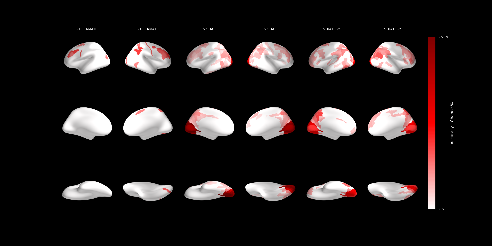

fMRI workflow example¶
This page is a work in progress and is based on my (Andrea) fMRI pipeline. This information may change once we agree on shared practices.
The code to reproduce these analyses can be found here.
For information on how to set up the working environment, install, and configure the packages mentioned in this document, refer to Set-up your fMRI environment and Coding practices
From Raw Data to BIDS¶
Collecting Raw Data¶
Note
It is essential to ensure that no personal identifiers are present in any of the files that leave the hospital. Use my script for anonymizing filenames and data.
At the hospital:
- Take fMRI scans from the hospital computer. Specify which buttons to select in the GUI.
- Anonymize the filenames using my script to ensure subject privacy.
- Extract behavioral (bh) and eye-tracking (et) data from the output folders on the experiment PC.
- Copy all files into a
sourcedata/folder organized with subfolders:bh,nifti, andet.
Converting fMRI Data to BIDS¶
Step 1: Preparing for the First Subject¶
Info
This step should only be performed for the first subject in your dataset. It can be skipped if anatomical and functional JSON templates are already available in code/misc/. See this guide for more info on the template files.
-
Convert DICOM to BIDS (NIfTI):
-
Prerequisites:
dcm2nii- Raw data should be organized as:
/sourcedata/sub-<xx>/dicom - MATLAB
-
Download
dicm2niifrom dicm2nii, unzip, and add to the MATLAB path. -
Open MATLAB and type
anonymize_dicmin the console. Select the folder where the files are and the output folder:/sourcedata/sub-<xx>/dicom_Anon. -
Run
dicm2niiin MATLAB. Select the DICOM folder and result folder (e.g.,dicom_converted). Untick the compress box and ensure to save the JSON file.
The output folder structure should be as follows:
dicom_converted ├── sub-01 │ ├── anat │ │ ├── sub-01_T1w.json │ │ └── sub-01_T1w.nii.gz │ ├── func │ │ ├── sub-01_task-exp_run-1_bold.json │ │ └── sub-01_task-exp_run-1_bold.nii.gz │ └── dcmHeaders.mat └── participants.tsv- Copy the
sub-01folder fromdicom_convertedinto the BIDS folder.
-
-
Validate the BIDS Directory:
- Use the BIDS Validator to check for any errors.
Step 2: Processing Subsequent Subjects¶
If the raw data is organized in a sourcedata/sub-xx folder, and JSON templates are already created:
- Anonymize/deface the images.
- Run
script01to move and rename the raw files into the BIDS folder, creating asub-xxfolder for each subject.
Converting Behavioral Data to BIDS¶
- Run
script02to convert behavioral.matdata intoevents.tsvfiles following the BIDS specification. This will parse the trial data from the.matfile and create new.tsvfiles for each subject and run.
The fMRI task script should output two files per run:
-
<timestamp>_log_<subID>-<run>-<buttonMapping>_<taskName>.tsv: This is the human-readable log file produced by the task. Here is an extract from the file:EVENT_TYPE EVENT_NAME DATETIME EXP_ONSET ACTUAL_ONSET DELTA EVENT_ID START - 2024-05-03 10:49:43.099 - 0 - - FLIP Instr 2024-05-03 10:50:11.399 - 28.300201 - - RESP KeyPress 2024-05-03 10:50:34.160 - 51.063114 - 51 FLIP TgrWait 2024-05-03 10:50:34.216 - 51.117046 - - PULSE Trigger 2024-05-03 10:50:40.000 - 56.904357 - 53 -
<timestamp>_log_<subID>_<run>_<taskName>.mat: This MATLAB file contains all the parameters to reproduce the experimental run, and stores input parameters and results.
Ensure that each resulting TSV file has at least three columns: onset, duration, and trial_type.
If the behavioural data is stored in a sourcedata/sub-xx/bh/ folder consistent to the one described above, you can run the script02_behavioural-to-BIDS.m script, after editing the parameters at the top of the script. This script iterates through subject-specific directories targeting behavioral .mat files, then processes and exports trial-related info into BIDS-compliant TSV event files in the BIDS folder provided as parameters.
Converting Eye-Tracking Data to BIDS¶
Pre-requisite: Install the EyeLink Developers Kit/API to convert EDF files into ASC files. Refer to the official setup guide:
-
Run the eye-tracking (ET) conversion script to convert the data to ASC in BIDS format.
Warning
BEP020 has not been approved yet. Consider whether event messages should be included in the BIDS structure.
Pre-processing fMRI Data in BIDS Format¶
Quality Control with MRIQC¶
Use MRIQC to perform quality control checks on your fMRI data:
Warning
JSON files may include NaN values that are incompatible with MRIQC. Use ./utils/sanitize_json.py to fix this issue before running MRIQC.
Minimal Preprocessing with fMRIprep¶
With your BIDS data organized, the next step is preprocessing using fMRIprep:
- Install Docker (and WSL if on Windows) and configure it for use with fMRIprep.
- Install
fmriprep-dockerwithpip install fmriprep-docker. - Ensure Docker has access to the folders you will be using (e.g., BIDS folder, temporary work directory).
To run fmriprep for a single subject, use the following command:
fmriprep-docker /data/projects/chess/data/BIDS /data/projects/chess/data/BIDS/derivatives/fmriprep participant \
--work-dir //data/projects/chess/data/temp_fmriprep --mem-mb 10000 --n-cpus 16 \
--output-spaces MNI152NLin2009cAsym:res-2 anat fsnative \
--fs-license-file /data/projects/chess/misc/.license \
--bold2t1w-dof 9 --task exp --dummy-scans 0 \
--fs-subjects-dir /data/projects/chess/data/BIDS/derivatives/fastsurfer \
--notrack --participant-label 41
Use CIFTI output for surface data
If you plan to run analysis on surface data, consider using CIFTI output images from fMRIPrep. While this approach hasn't been directly tested here, CIFTI outputs can provide several advantages:
- Surface analysis in SPM (see this conversation on Neurostars).
- CIFTI images include cortical BOLD time series projected onto the surface using templates like the Glasser2016 parcellation (which is also used for MVPA).
- This method allows for direct analysis of surface data in formats like
.gii, which can be compatible with SPM for further analysis. - Using CIFTI outputs could simplify the process of obtaining surface-based parcellations and make the data more directly usable in subject space, potentially eliminating the need for complex and time-consuming transformations.
- It may also provide a more accurate representation of cortical activity by avoiding interpolation errors that can occur when mapping from volume to surface space.
If you decide to explore this option, make sure to include the cifti falg in --output-spaces when running fmriprep-docker. This setup will produce CIFTI files (.dtseries.nii) along with standard volumetric outputs, giving you flexibility in how you proceed with your analysis.
Allocating resources to fMRIprep
Running fMRIPrep is resource and time intensive, especially with high-resolution data. Here are some practical tips to optimize the process:
- Time Estimate: Processing a single subject can take between 4-8 hours depending on your system's specifications (e.g., CPU, RAM). Plan accordingly if you have many subjects.
-
Optimize Resource Allocation: Adjust the
--n-cpusand--mem-mbarguments to make the best use of your available hardware:- n-cpus: Allocate about 70-80% of your CPU cores to avoid system slowdowns (e.g.,
--n-cpus 12on a 16-core system). - mem-mb: Use around 80-90% of your total RAM, leaving some free for the operating system (e.g.,
--mem-mb 32000on a 40 GB system).
- n-cpus: Allocate about 70-80% of your CPU cores to avoid system slowdowns (e.g.,
-
Monitor Resource Usage: While running fMRIPrep, open a system monitor like Task Manager (Windows), Activity Monitor (Mac), or htop (Linux) to observe CPU and memory usage:
- Aim for high CPU usage (close to maximum) and RAM usage that is slightly below your system’s capacity.
- If memory usage exceeds available RAM, the process might crash due to Out of Memory (OOM) errors or cause disk space issues if using a
--work-dirthat fills up.
-
Adjust Settings if Necessary: If you encounter OOM errors or the process is slower than expected:
- Lower
--mem-mb: Decrease memory allocation incrementally (e.g., by 2-4 GB at a time). - Reduce
--n-cpus: Using fewer cores can help balance the load and prevent crashes. - Use a dedicated
--work-dir: Specify a work directory on a high-speed SSD or similar to reduce I/O bottlenecks and ensure there's enough disk space for temporary files.
- Lower
If the run finishes successfully (check the last line of your terminal output), you should have a new BIDS/derivatives/fmriprep/sub-xx folder. See here for a complete list of outputs generated by fMRIPrep. Make sure that inside your anat and func folders you have all the scans (anatomical and functional for all runs) in the specified spaces. Since we specified fsnative as a space and did not use the --no-recon-all flag, fMRIPrep will also produce surface data in BIDS/derivatives/fastsurfer/sub-xx.
Interpreting fMRIPrep Visual Reports¶
Check the sub-xx.html report to ensure everything ran smoothly. Pay particular attention to:
- Registrations: Verify the alignment between functional and anatomical images.
- Framewise Displacement (FD) Values: Look for runs with unusually high FD values, as these may indicate motion artifacts or poor data quality.
For more details, refer to the general guidelines outlined here, and to the following links:
Processing Eye-Tracking Data with bidsmreye¶
To process eye-tracking data using bidsmreye, run the following Docker command:
docker run -it --rm \
-v /data/projects/chess/data/BIDS/derivatives/fmriprep:/data \
-v /data/projects/chess/temp_bidsmreye:/out \
cpplab/bidsmreye:0.5.0 \
/data /out participant all \
--space T1w \
--reset_database \
--verbose
Note
In my experience, bidsmreye worked only when using the T1w fMRIPrep output space.
First-Level Analysis – General Linear Model (GLM)¶
After preprocessing, proceed to the first-level analysis with the GLM. Running the GLM and setting contrasts is straightforward using script03. Make sure to adjust the following parameters:
- Paths:
fmriprepRoot: Path to the fMRIPrep folder.BIDSRoot: Path to your BIDS folder.outRoot: Path to save GLM results (ideally in the derivatives folder, in afmriprep-spmfolder).-
tempDir: Directory for temporary files, such as uncompressed or smoothed files. -
Subject Selection:
Leave a new line before listing subjects.
-
selectedSubjectsList: A list of integers like[41, 42, 43, 44]or use'*'to analyze all subjects. -
selectedRuns: List of runs to analyze. -
Contrasts Setup:
selectedTasks(1).name = 'exp'; % The name of the task. Must match the task name in your BIDS filenames. selectedTasks(1).contrasts = {'Check > No-Check'}; % Name of the contrast. selectedTasks(1).weights(1) = struct('C_WILDCARD___WILDCARD_', 1, 'NC_WILDCARD___WILDCARD_', -1); % Weights for each regressor. selectedTasks(1).smoothBool = false; % Whether to smooth images before GLM. Useful for localizers.
If everything is configured correctly, the script will generate new sub-xx folders in your output directory. These folders will contain subdirectories for each analysis task, with beta_000x.nii files for each regressor (including confounds and conditions).
Verifying the Design Matrix¶
It is advisable to verify that the design matrix is set up correctly:
- Open the SPM GUI by typing
spm fmriin the MATLAB Command Window. - Click on Results and select the
SPM.matfile located in yourBIDS/fmriprep-spm/{space}/sub-xx/{task_name}/directory. -
This will open the SPM Contrast Manager, showing the design matrix and assigned contrasts. Ensure the following:
- No overlapping or unusually long conditions.
- The correct number of runs.
- Confound regressors are positioned at the end of each run.
- Contrast weights are assigned correctly.
-
Select your contrast and click Done.
- In the next window, set the following options:
- Apply masking: None
- P-value adjustment: None
- Threshold:
0.001 - Extent threshold:
0
This will display the results of the contrast (thresholded t-map) on the top right, along with a list of significantly active clusters in the bottom right panel.
Visualizing Activations¶
To visualize activations on a volume or surface:
- Click Display -> overlays... in the SPM GUI.
- Select sections for volume plotting or render for surface plotting.
- Choose the subject's anatomical image from
BIDS/derivatives/fmriprep/sub-xx/anat.- For volume plots, select the
.niifile corresponding to the same space as your GLM (usually MNI). - For surface plots, select the pial or inflated brain image.
- For volume plots, select the
Warning
SPM cannot read .nii.gz files directly, so you must decompress them into .nii files. This can be done with any decompression tool by right-clicking on the file in your file explorer. Once decompressed, use the SPM GUI to select the .nii file.
Generating and Organizing Regions of Interest (ROIs)¶
ROIs from Functional Localizers¶
To run MVPA, you need Regions of Interest (ROIs) to select your voxels. You can obtain ROIs through:
- Functional Localizers: Perform a localizer task in the scanner, then run a GLM on the preprocessed and smoothed data. For example,
Faces > Objectsto identify the FFA. - Pre-defined Anatomical Masks: Use anatomical masks in the same space as your subjects (e.g., MNI). Ensure the mask resolution matches the resolution of your data (e.g., resample/reslice if necessary using tools like ANTs, SPM, or Python libraries like nilearn or nibabel).
HCP Glasser Parcellation¶
In my pipeline, I use the Glasser2016 parcellation projected on fsaverage, which includes 180 ROIs per hemisphere. This process involves converting Glasser parcellation annotation files to labels and mapping them from fsaverage to the subject's T1 and MNI spaces. Use the HPC-to-subject.sh script for automation (see the top of the script file for usage notes).
Multi-Variate Pattern Analysis (MVPA)¶
Running Decoding with SVM¶
After organizing your ROIs, proceed with the MVPA analysis:
- Use
script04to perform independent cross-validated SVM classification on each subject and ROI. - The script outputs decoding accuracy for each ROI of the HCP parcellation.
The results are saved in a BIDS/derivatives/mvpa folder organized according to the BIDS structure. Each subject's folder will contain a .tsv file with the decoding accuracy results.
Plotting and Reporting¶
The Glasser parcellation includes parcels at three levels, with each higher level grouping several ROIs into a single ROI. In my pipeline, the analysis is performed at the lowest level (180 parcels per hemisphere), then averaged across ROIs within a larger ROI using script06.
- The script computes the significance of each decoding accuracy against chance.
- It generates plots of significant accuracies on an inflated brain for each grouping level.
For example:

TODO: Add links to folder structure and/or data.
TODO: Add information about defacing/anonymizing raw data (including filenames) using my script.
TODO: Improve and add details for the parameters required in the script02_behavioural-to-BIDS.m.
TODO: Wrap NIfTI and behavioral data to BIDS conversion into a single script that accepts input arguments.
TODO: Provide more details on how behavioral files are saved and on the BIDS structure.
TODO: Include references to other commonly used atlases for ROI generation.
TODO: Explain how to save and run the mriqc commands.
TODO: Refine the phrasing and add more info on the parameters for GLM and contrasts setup.
TODO: Possibly include screenshots for better clarity (e.g., code sections).